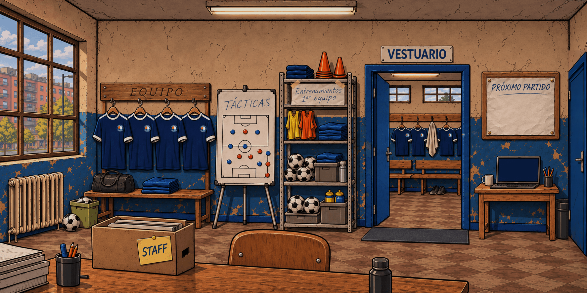

Panel del club · Puerta al pasillo
Candidata pendiente de aprobación artística. La r03 aprobada permanece intacta. Solo cambia la franja de las antiguas taquillas de la derecha.
La puerta muestra «Ir al pasillo». Su escenario definitivo está pendiente: seleccionar el acceso informa del bloqueo sin cambiar la partida. El acceso permanece bloqueado durante el recorrido guiado.
Vista completa


Detalle de la zona modificada
Comparación estática de los recursos, no capturas del juego. 36.384 píxeles cambian dentro de la franja x=1718–1773, y=150–799; cero fuera. La revisión del hover, foco y toque en Safari sigue pendiente.